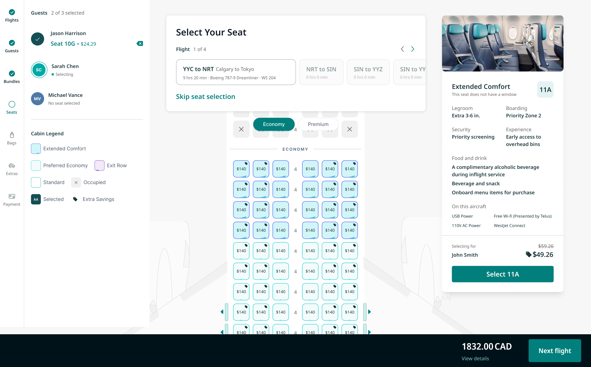
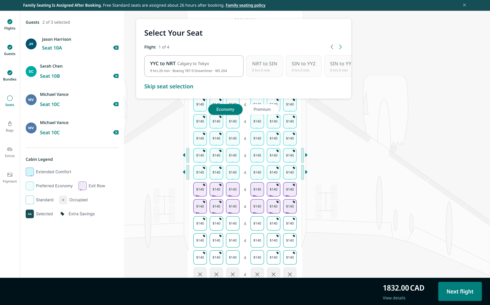
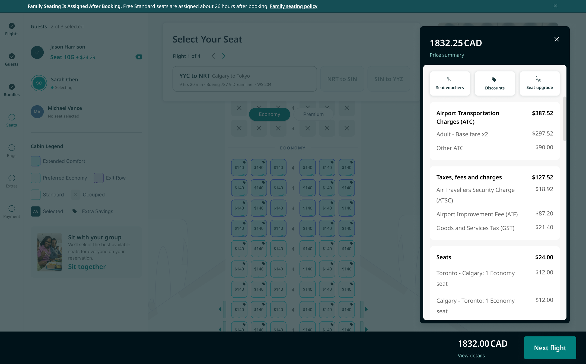

Modernizing the Seat Selection Experience
Unifying three disconnected seat selection flows into one modern experience across booking, self-serve, and check-in. Currently moving from design into development.



TLDR
Seat selection existed as three separate experiences across booking, self-serve, and check-in. Guests couldn’t tell what a seat was worth or what it included, and layers of airline rules made the page hard to use.
Reused prior research and AI-assisted prototypes to align stakeholders on scope in weeks, not months, then led one unified redesign across all three products, rebuilding the shared components underneath.
Now in development. The page is seen by millions of guests a year, and early A/B tests on isolated content changes are already generating an estimated $50K a year.
Background
A page working overtime
Over the last few years, the airline added a lot of new products, and the seats page had to do more and more: market seat types, explain rules, and enforce restrictions. Downstream, guests were unhappy when they ended up in undesirable seats without being told ahead of time. Seat selection had also split into three disconnected experiences across booking, self-serve, and check-in, each solving the same interaction differently.
I was brought on to lead the full redesign, unifying the experience end to end and working directly with product, engineering, data, optimization, and research through delivery.
The challenge
One decision, three interfaces
The interaction guests cared about most, picking their seat, looked and behaved differently depending on which product they landed in, and asked too much of them once they got there.
Challenge #1
Too much to digest, especially on mobile
The interface surfaced a lot of content at once for what should be a quick decision. The cognitive load only got worse on mobile, where most guests actually complete the flow.
Challenge #2
An experience that couldn’t keep up
Choosing a seat competed with everything else on the page: distracting upsells, and pop-up after pop-up explaining a different rule or fee. The experience had fallen behind what guests expect from a modern digital product.
Goal
One experience, wherever guests land
Success meant a guest could move between booking, self-serve, and check-in and recognize the same interface doing the same job, with less to think about, not more.
The Discovery
Starting from what we already knew
Rather than starting from a blank page, I brought in research and workshop findings from earlier initiatives to prioritize which features mattered most. I used AI-assisted prototyping early to get stakeholders aligned on objectives, scope, and requirements before high-fidelity design began.
Research insight #1
Grounding priorities in insights we already had
Because we reused existing research, feature prioritization didn’t restart as a debate from zero. Stakeholders aligned on scope quickly, and that set the pace for everything after.
Research insight #2
Prioritizing by business objective, not wishlist
I used the AI-assisted prototypes to sort every possible feature into core and transformational, and required each one to link back to a specific business objective before it earned a place in scope. That filter turned a long backlog into a prioritized one, instead of relitigating each feature one at a time.
The Process
Designing across booking, self-serve, and check-in
I designed every feature alongside product and technology partners, checking each decision against technical feasibility as well as business and user goals. I directed a Junior Designer on the shared components (header, cart, wayfinding, sign-in) while I owned the overall product decisions.
I worked closely with our UX Writer to rewrite the rule and fee copy that used to live in pop-ups, so it could be woven directly into a new progressive disclosure pattern. Throughout, I partnered with user research on insights and kept regular check-ins with revenue and marketing stakeholders.


The Vision
A modern, unified interface
The redesign is a full overhaul: a modern dashboard-style layout, integrated discount codes, and reworked shared components (global header, shopping cart, wayfinding, and sign-in), so seat selection looks and behaves the same no matter where a guest starts.
The pop-ups that used to explain every rule are gone. Seat details are now surfaced progressively within the page, so guests get what they need to decide, on mobile or desktop, without the overload of the old flow.

Key Decisions
Two calls shaped how this redesign got scoped, not just how it looks.
Start research from zero vs. reuse what already existed
Running fresh research to make sure priorities reflected the current state of all three products, rather than leaning on findings from earlier initiatives.
Brought in prior research and workshop findings to prioritize which features mattered most, and used AI-assisted prototypes to pressure-test them with stakeholders.
Less certainty that older findings still held across all three products, in exchange for aligning stakeholders on scope fast enough to keep pace with the redesign timeline.
Fix the seat picker in isolation vs. rebuild the shared components underneath it
Redesigning the seat picker within each product and leaving the surrounding header, cart, wayfinding, and sign-in untouched to move faster.
Reworked those shared components alongside seat selection, so the whole flow behaves consistently across booking, self-serve, and check-in.
A larger scope than fixing seat selection alone, in exchange for one consistent system other teams can build on, instead of a well-designed seat picker inside three still-inconsistent products.
Impact
The redesign is moving from design into development, with the earliest features already handed off and in build. Full outcome data isn’t available until launch, but small A/B tests on isolated content changes within the existing flow are already generating an estimated $50K a year: an early signal of the opportunity the full redesign is targeting.
Takeaways
Moving fast means getting everyone on the same page first
The clearest lesson so far is that speed and alignment aren’t in tension; they depend on each other. Using AI prototypes to get stakeholder buy-in early meant the team could move quickly afterward without re-litigating scope midway through.
Designing across products means designing for handoff
Leading a redesign across three products meant the system had to make sense to teams I wasn’t in the room with day to day. Rebuilding the shared components was as much about giving other teams a shared language as it was about the guest experience itself.